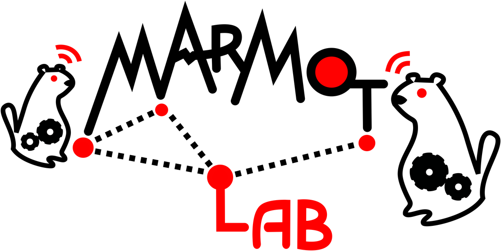
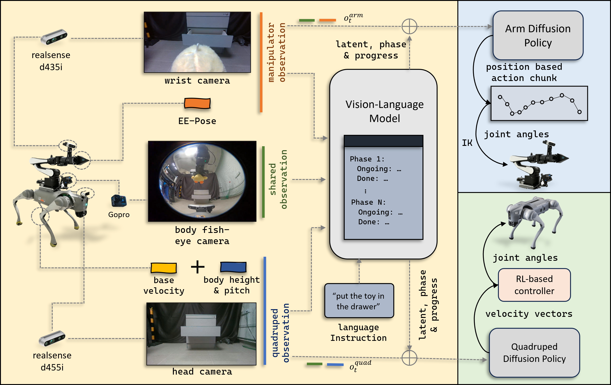
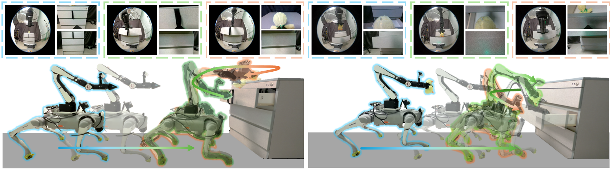
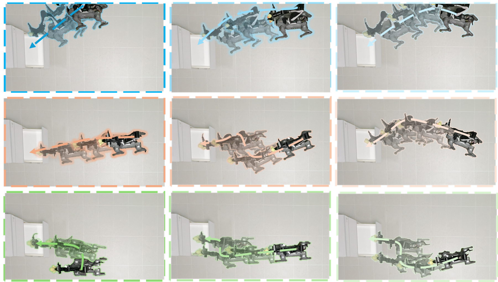

National University of Singapore
 We present FoundAtion-model-guided decoupled LoCO-maNipulation visuomotor policies (FALCON), a framework for loco-manipulation that combines modular diffusion policies with a vision–language foundation model as the coordinator.
Our approach explicitly decouples locomotion and manipulation into two specialized visuomotor policies, allowing each subsystem to rely on its own observations.
This mitigates the performance degradation that arise when a single policy is forced to fuse heterogeneous, potentially mismatched observations from locomotion and manipulation.
Our key innovation lies in restoring coordination between these two independent policies through a vision–language foundation model, which encodes global observations and language instructions into a shared latent embedding conditioning both diffusion policies.
On top of this backbone, we introduce a phase-progress head that uses textual descriptions of task stages to infer discrete phase and continuous progress estimates without manual phase labels.
To further structure the latent space, we incorporate a coordination-aware contrastive loss that explicitly encodes cross-subsystem compatibility between arm and base actions.
We evaluate FALCON on two challenging loco-manipulation tasks requiring navigation, precise end-effector placement, and tight base-arm coordination.
Results show that it surpasses centralized and decentralized baselines while exhibiting improved robustness and generalization to out-of-distribution scenarios.
We present FoundAtion-model-guided decoupled LoCO-maNipulation visuomotor policies (FALCON), a framework for loco-manipulation that combines modular diffusion policies with a vision–language foundation model as the coordinator.
Our approach explicitly decouples locomotion and manipulation into two specialized visuomotor policies, allowing each subsystem to rely on its own observations.
This mitigates the performance degradation that arise when a single policy is forced to fuse heterogeneous, potentially mismatched observations from locomotion and manipulation.
Our key innovation lies in restoring coordination between these two independent policies through a vision–language foundation model, which encodes global observations and language instructions into a shared latent embedding conditioning both diffusion policies.
On top of this backbone, we introduce a phase-progress head that uses textual descriptions of task stages to infer discrete phase and continuous progress estimates without manual phase labels.
To further structure the latent space, we incorporate a coordination-aware contrastive loss that explicitly encodes cross-subsystem compatibility between arm and base actions.
We evaluate FALCON on two challenging loco-manipulation tasks requiring navigation, precise end-effector placement, and tight base-arm coordination.
Results show that it surpasses centralized and decentralized baselines while exhibiting improved robustness and generalization to out-of-distribution scenarios.
 The blue and green regions denote the decoupled manipulator and quadruped diffusion policies, which act in their own observation and control spaces (wrist/body cameras and end-effector pose for the arm; head/body cameras, base velocity, and body height/pitch for the quadruped). The yellow region shows the foundation model module, which aggregates global RGB observations and the language instruction into a shared latent, while capture task phase and progress simultaneously; this task-representative latent is then used to jointly condition both diffusion policies, providing semantic coordination between the two subsystems.
 Overview of the manipulation tasks. The task on the left shows the quadruped–manipulator system approaching the drawer, adjusting its base pose for optimal arm reachability, opening the drawer, and placing a toy inside. The task on the right illustrates a complementary scenario in which the robot navigates to the drawer while holding a toy, places the toy into the already opened drawer, and then closes the drawer using pose-assisted whole-body manipulation. The top row shows synchronized egocentric camera observations for each stage, color-coded to match the corresponding robot pose, while the bottom row depicts the whole-body motions generated by the decoupled locomotion and manipulation policies.
 Initial robot positions and example navigation trajectories for Task~2. The robot begins from multiple starting locations across the workspace and navigates toward the opened drawer. The color-coding indicates the three evaluation regions: green for the left area, orange for the center area, and blue for the right area. Note that the training data are primarily collected from the center region, making the left and right regions predominantly out-of-distribution (OOD) during evaluation.
If you have any questions, feel free to contact Chengyang He , Ge Sun , Yue Bai , Junkai Lu and Jiadong Zhao.